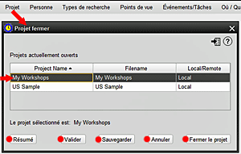

Cette option vous permet de fermer un projet actuellement ouvert dans HRE. 1. Pour fermer un projet actuellement ouvert, sélectionnez PROJET dans le menu, puis sélectionnez l'option Fermer le projet. 2. La liste des projets ouverts apparaît, indiquant le nom du projet, le nom du fichier et s'il agit d'un projet local ou d'un projet sur un serveur. 3. Mettez en surbrillance le nom du projet que vous souhaitez de fermer. Dans l'illustration, le projet "Mon atelier" a été sélectionné parmi les projets actuellement ouverts. S'il n'y a qu'un seul projet ouvert, il est sélectionné par défault 4. Une fois que vous mettez en surbrillance le projet requis, le nom apparaît ci-dessous, pour permettre la vérification. 5. Notez qu'à ce stade, le projet sélectionné peut également être soumis à d'autres processus, notamment RÉSUMÉ, VALIDATION, ou SAUVEGARDER, et il exist une option pour ANNULER la fermeture. 6. Si vous sélectionnez ensuite Fermer le projet et confirmez la décision, le projet sera fermé (il n'y aura pas d'avis de confirmation si cette option a été sélectionnée dans PARAMÈTRES). HRE reste ouvert afin qu'un autre projet puisse être ouvert si vous le souhaitez. 7. Si le projet fermer était actellement le projet actif, vous pouvez choisir de rendre un autre projet actif. |
|
Sujets Relatifs |